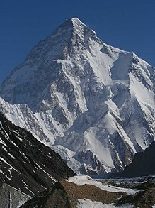

СТ1 СТ2 СТ3
СТ1

Гора, гірська споруда — форма рельєфу, різке локальне ізольоване піднесення земної поверхні над сусідніми відносно вирівняними ділянками, що характеризується чіткою лінією підошви (границею переходу від рівнини до
власне гори), різкими коливаннями відносних висот. Загалом горами вважають елементи рельєфу з абсолютними висотами,
вище 600 м над рівнем моря.